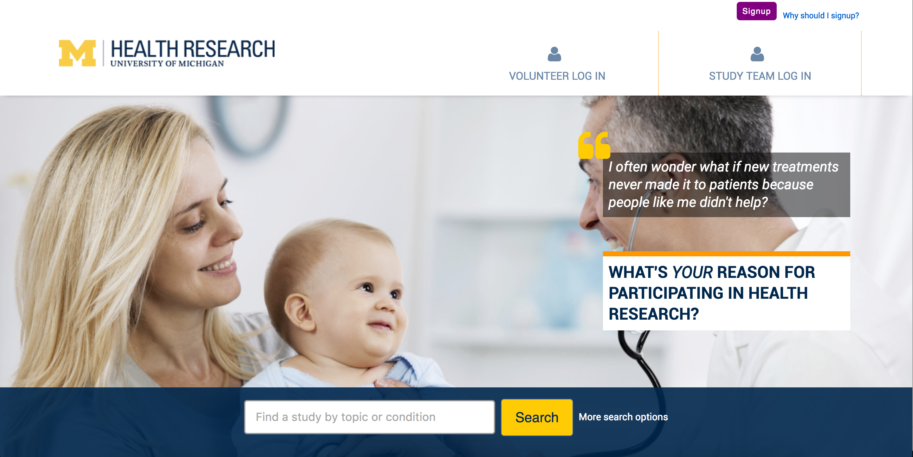
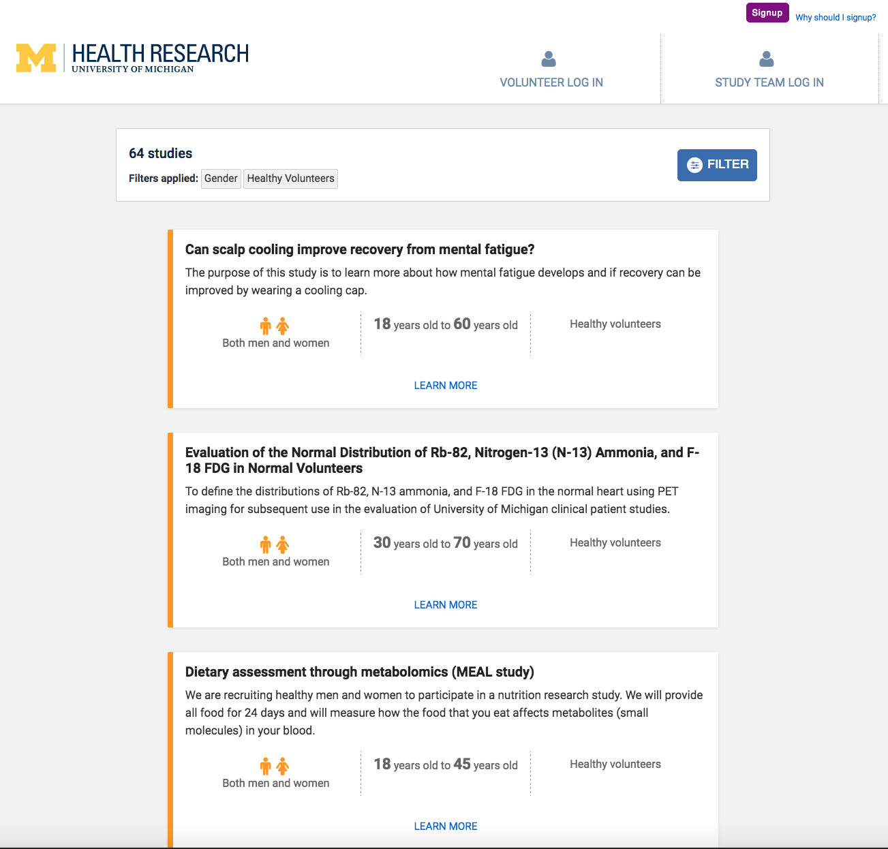
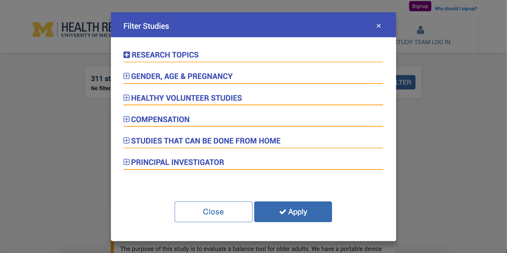
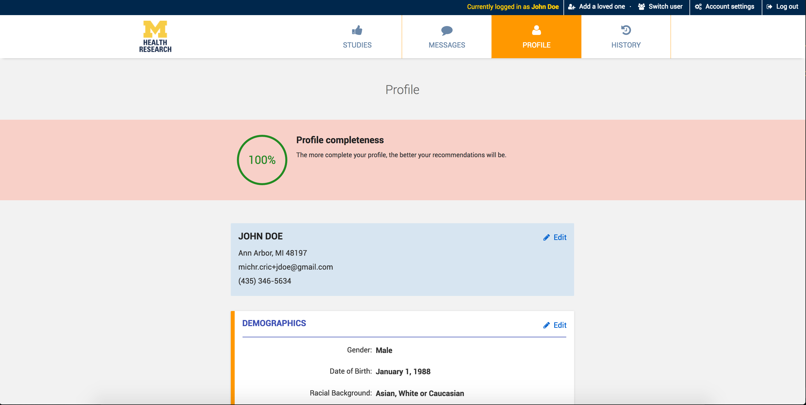
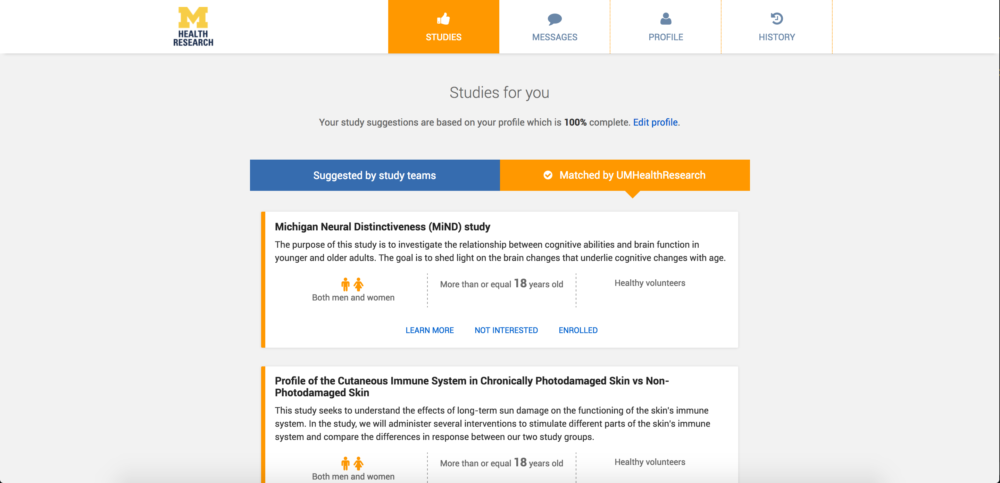
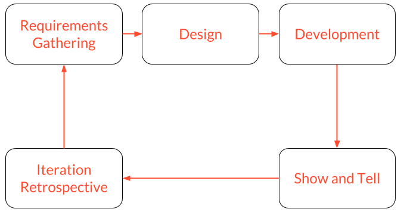

UMHealthResearch.org is a web portal that allows people to sign-up for clinical trials. It connects the community of volunteers to the researchers at the University of Michigan. I worked on the design and development of the portal. I was involved with most aspects of the product, including feature design, front-end & back-end development, as well as infrastructure setup.
The portal allows researchers to publish their studies in a searchable format that allows potential volunteers to easily discover them.
  UMHealthResearch.org has built in messaging services that connects volunteers and study team members.
Each volunteer has a detail user profile that is used by our recommendation engine to match them with studies. People are only match to studies they are eligible to participate in.
 We followed agile development methodologies and split our process into bi-weekly sprints during which we went through full development cycles for each feature that we developed. We started each spring with requirements gathering and design. These steps were followed by development of the features. We then showed our progress to our client and got feedback. Finally, we did an iteration retrospective to discuss what aspect of the spring went well and which ones needed improvement.
The product currently has over 26,000 active users who have shown interest in studies over 100,000 times. Additionally, the portal has over 300 actively recruiting studies. We strive to make recruitment for studies much easier and more effective. We hope that through UMHealthResearch.org we could do our part to push research forward.